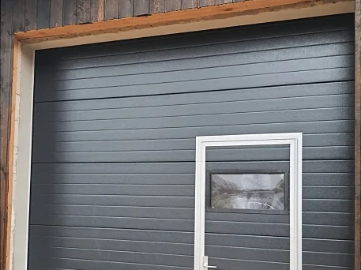
Paceļamie un sekciju vārti
Privātmāju garāžām, saimniecības ēkām, veikaliem un angāriem. Komplektējami ar logiem, personāla durtiņām un automātiku.
- Garāžām
- Angāriem
- Veikaliem
- Ar 2 gadu garantiju
Paceļamie un sekciju vārti, bīdāmie vārti, industriālie vārti, automātika un durvis. Ražojam Nītaurē, strādājam Cēsīs, Valmierā, Siguldā, Rīgā un visā Vidzemē.
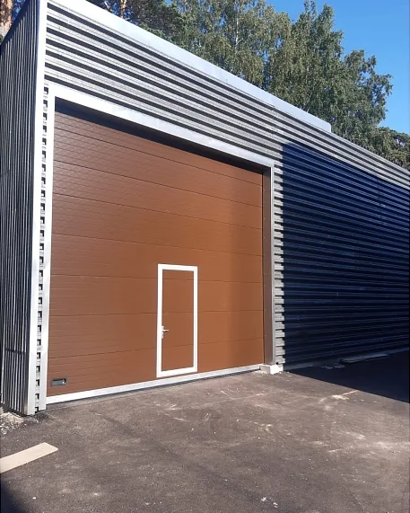
Izvēlieties savu gadījumu. Pie katra veida ir poga, kas pieteikuma formā ieraksta vārtu veidu, lai atliek norādīt tikai izmēru.

Privātmāju garāžām, saimniecības ēkām, veikaliem un angāriem. Komplektējami ar logiem, personāla durtiņām un automātiku.
Privātmājām, pagalmiem un teritorijām. Teritoriju barjeras saimnieciskiem un industriāliem objektiem.
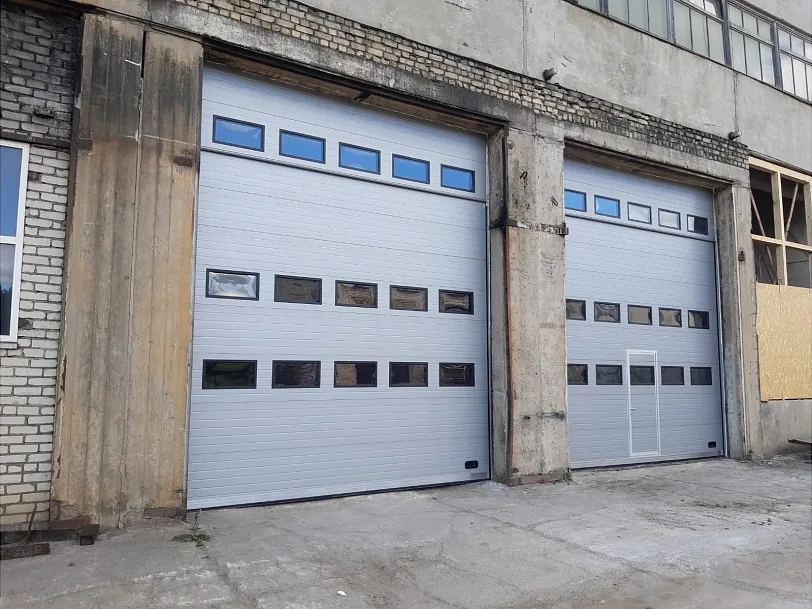
Angāriem, fermām, noliktavām, boksiem un tehnikas novietnēm. Vārti pēc klienta rasējuma un vajadzībām.
Pieteikums šim veidam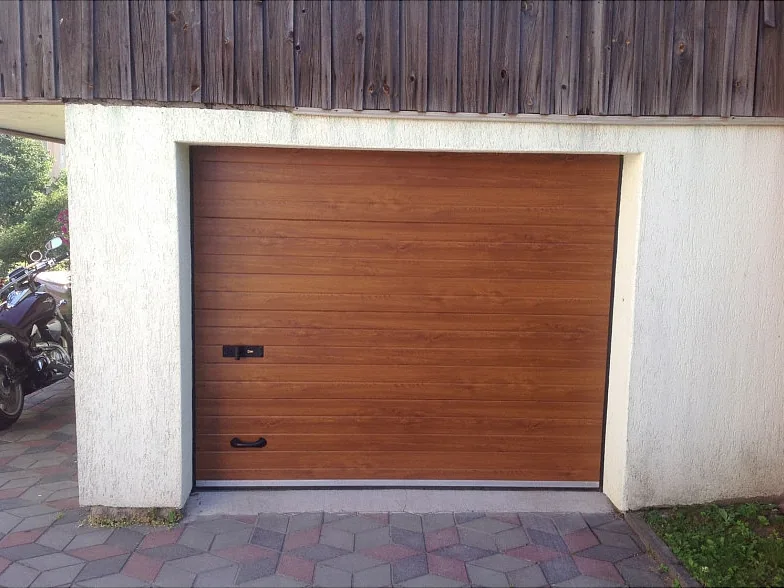
Vārtu automātika un tālvadības pultis privātiem, saimnieciskiem un industriāliem objektiem. Uzstādām arī jau esošiem vārtiem.
Pieteikums šim veidam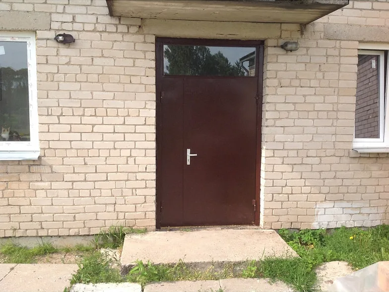
Ārējās un iekšējās durvis mājām, personāla un dienesta durvis. Metāla durvju izgatavošana un uzstādīšana pēc klienta izvēles.
Pieteikums šim veidamServiss un garantija ir mūsu vārds. Mūsu durvīm un vārtiem dodam garantiju un veicam apkopi.
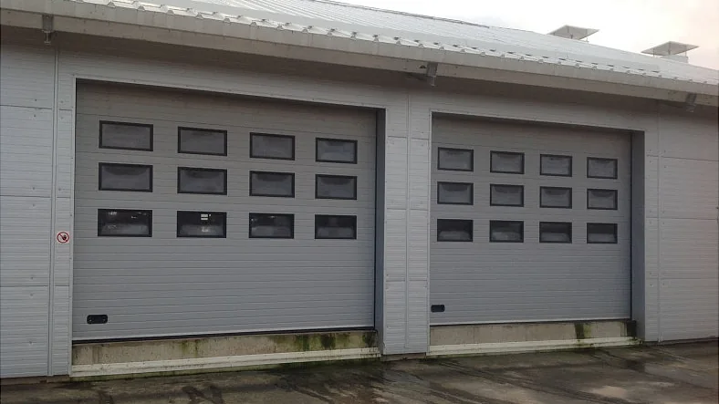
Paceļamos vārtus komplektējam pēc vajadzības. To, kas jums vajadzīgs, varat atzīmēt pieteikumā.
Krāsu toņi pēc RAL krāsu kataloga.
1992
Uzņēmums dibināts un reģistrēts Komercreģistrā
26
Pilsētas, kurās sniedzam pakalpojumu
176
Pagasti papildus pilsētām
2gadi
Garantija paceļamajiem vārtiem
Vārtu serviss, apkope un remonts visā Vidzemē, kā arī citviet Latvijā.
Mūsu izgatavotie un uzstādītie vārti un durvis.
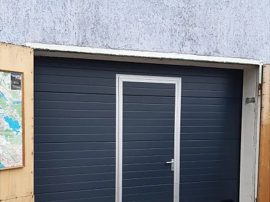
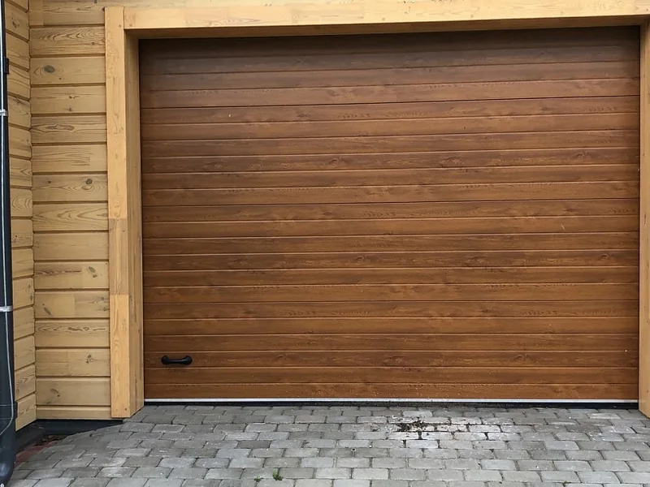
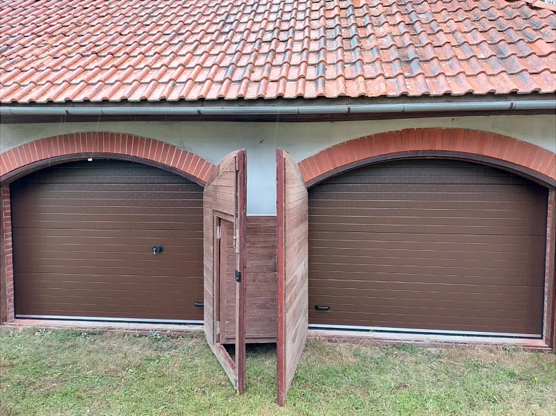
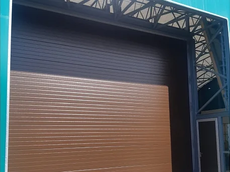
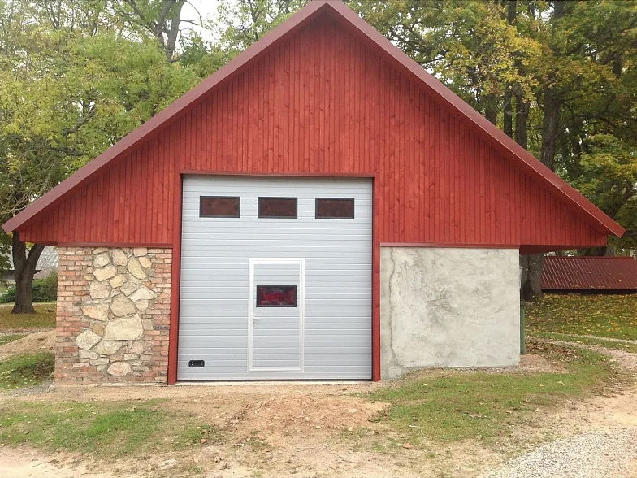
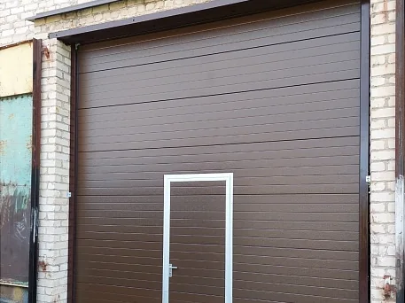
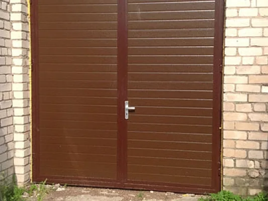
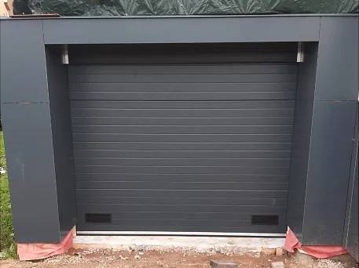
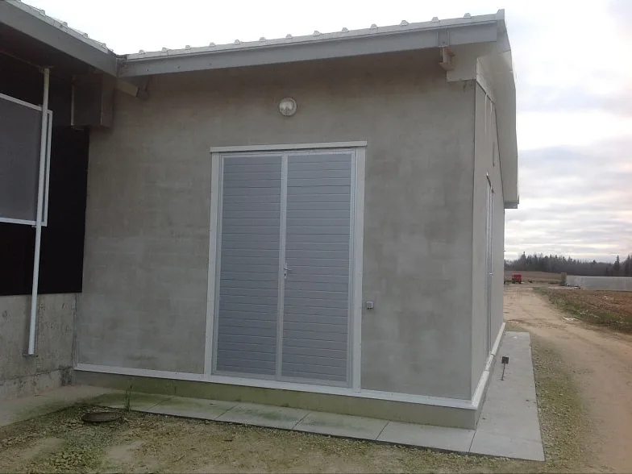
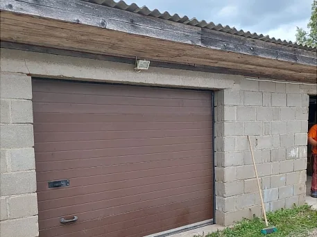
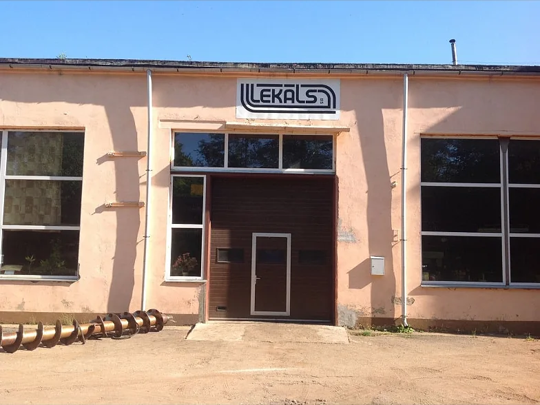
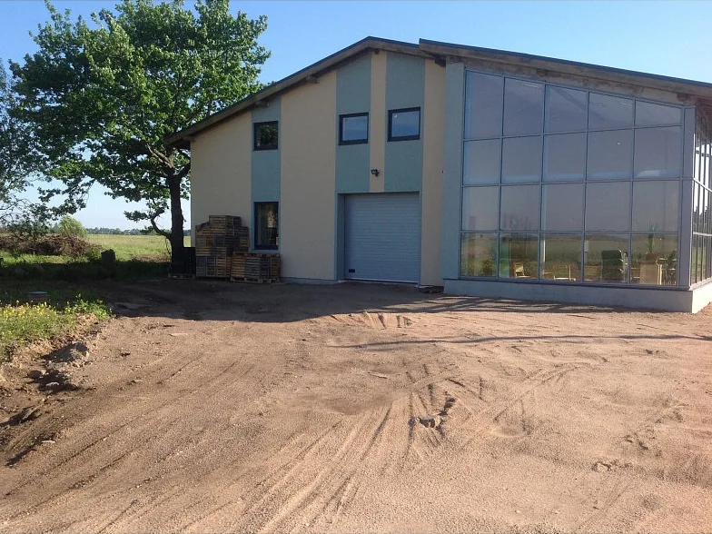
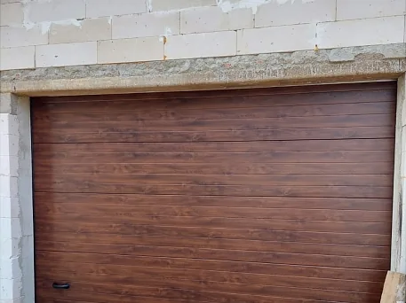
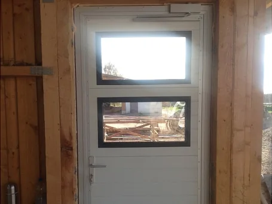
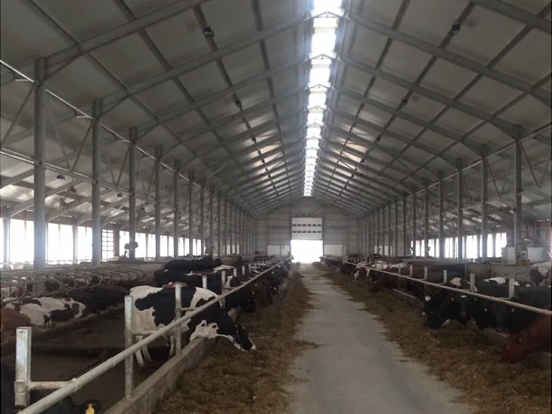
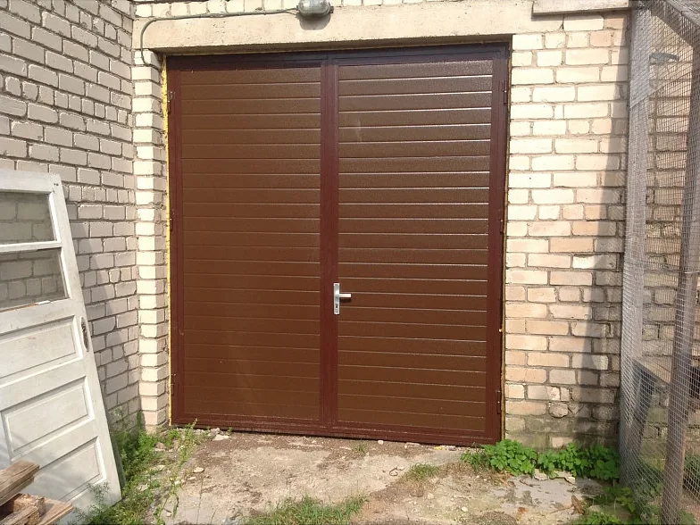
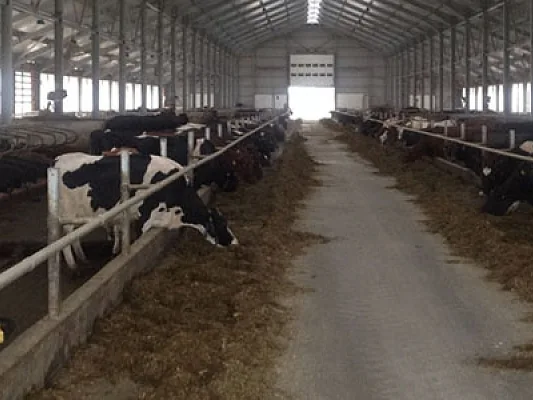
Norādiet vārtu veidu un aptuveno ailes izmēru. Ar to pietiek, lai sagatavotu piedāvājumu.
Paldies, pieteikums aizpildīts pareizi.
Šī ir vizuāla mājaslapas versija, tāpēc pieteikums vēl netiek nosūtīts. Gatavā lapā tas nonāktu Vārtu pasaules e-pastā.
Labi vārti: drošība sev un tuvajiem.